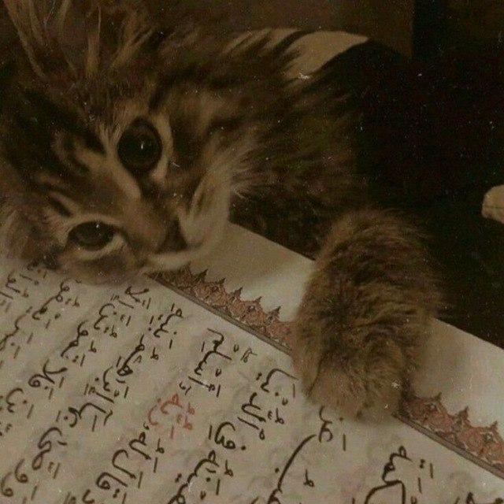

◈
Напоминания
Короткие и полезные слова из Корана и Сунны.

Иногда человеку нужно лишь одно небольшое напоминание, чтобы остановиться, задуматься и вспомнить о главном.
Короткие и полезные слова из Корана и Сунны.
Мысли, которые помогают обрести спокойствие и укрепить намерение.
Пусть среди повседневной суеты найдётся место для полезного напоминания.
Новые публикации будут появляться здесь автоматически после подключения Telegram-бота.
✈ Открыть канал в Telegram